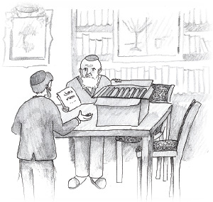

A Disguise and the Besuras Ha’geula
A story for Purim

R’ Chaim Yehoshua had taken this lofty task upon himself, to help redeem captives. An unfortunate family who lived in the city for a long time was unable to pay their rent and was cruelly sent to jail. Despite his efforts to raise the money to set them free, he was still missing a large part of it.
He went to the home of R’ Chona Halberstam, the great-grandson of the tzaddik R’ Chaim of Sanz, to ask his advice. R’ Chona welcomed him graciously. “How can I help you?” he asked.
R’ Chaim Yehoshua told him the situation. “I did all I could and beyond. I went from house to house and raised money, but I still need much more.”
The Rebbe smiled and then said the most surprising thing. “Purim is coming. I suggest that you dress up as an Admur. I will give you the gartel that belonged to R’ Chaim of Sanz and his walking stick, and the shtraimel he wore on Shabbos and Yom Tov. These items are very precious to me, but I will lend them to you for the sake of pidyon shvuyim (redeeming captives).
R’ Chaim listened closely, still not understanding what the point of this was. The Rebbe continued, “We will publicize that on Purim you will be giving brachos. People will come to give you pidyonos with sums of money for tz’daka. With Hashem’s help, all will be well.”
R’ Chaim meekly asked, “Is the Rebbe serious about this?”
“Yes, yes, every word.”
R’ Chaim Yehoshua found this exceedingly strange. What did this have to do with being a Rebbe? But the Rebbe had told him and he wanted to complete this mitzva of pidyon shvuyim. To his great astonishment, the word got out and many people filled the house in order to ask for his bracha. The pages of pidyonos along with a pile of money continued to grow.
At the end of Purim, he took off the precious costume and sat down to count the money. How thrilled he was when he saw that he had the money he needed! He joyfully ran to R’ Chona’s house to tell him that his advice had worked.
The Rebbe’s face shone and he was silent for some time. The members of the household watched him and waited for him to say something. The Rebbe emerged from his thoughts and said, “Just as you merited telling me the news about the pidyon shvuyim, I bless you that you also merit to announce the coming of Moshiach Tzidkeinu, may it be soon.”
***
Years went by and war overtook the world. Poland was cut in two parts with one part conquered by the Germans and the other part under Russian control. The situation in Russia was unbearable. Thousands of Jews were sent to frozen Siberia and forced to work under backbreaking conditions. But despite the tremendous hardships, compared to their brethren back in conquered Poland, their lot was far better. News about the horrors taking place in Poland, with trainloads of Jews being taken to extermination camps, trickled in.
R’ Chaim Yehoshua, like thousands of other Jews, was exiled to Siberia where he did hard labor in sub-human conditions. What kept him going was a special person, an old man whose name he did not even know. The old man was a scholar and he chose R’ Chaim Yehoshua as his study partner to learn Torah. They spent hours together learning Torah and Chassidus and telling one another Chassidic tales, encouraging one another with emuna and bitachon.
One day, when they finished learning together, the old man made a request of R’ Chaim Yehoshua. “Dear R’ Chaim, I am old and it is doubtful whether I will leave this bitter galus. I providentially met you, who are an upright and G-d fearing man. I want to ask you something.”
R’ Chaim listened with curiosity mixed with apprehension and the old man continued. “I have a box with very precious s’farim. Most of them I inherited from my holy father and some I bought for a lot of money. You will certainly survive and leave here. I would like you to take these s’farim. When the time comes, you will know what to do with them.”
R’ Chaim nodded and his heart pounded. Such an important mission was being given to him. He thought, if only I merit getting out of this vale of tears, even if it is just to fulfill the request of the old man…
A few days later, the old man breathed his last and the box of holy s’farim remained with R’ Chaim.
***
5704/1944
Five years had passed since the old man had died and the war was over. R’ Chaim was able to leave Russia for the United States with the box in his possession. “The merit of the tzaddik from Raisha who blessed me that I will announce the Geula and the request of the old man that I take his s’farim out of exile are what stood by me, so I was able to leave Europe with great miracles and wonders.” He believed this with all his heart.
R’ Chaim Yehoshua settled down and built his life anew. Now and then, he opened the box with holy awe, examined the s’farim, and then replaced them. The years went by, and he became a grandfather and then a great-grandfather. Often, his family members asked him for details of his life during and before the war. He usually told the story about dressing up like an Admur for the sake of pidyon shvuyim. He always added the bracha of the Rebbe, “That you merit announcing the coming of Moshiach.” R’ Chaim Yehoshua believed that he would merit this part of the bracha too.
In 5742/1982, R’ Chaim Yehoshua felt that the time had come for him to give some of the s’farim to the right people. He asked his son to remove certain s’farim from the box and then said, “Give these s’farim as a gift to the Lubavitcher Rebbe. In these s’farim, much is written about Inyanei Geula and Moshiach. In one of the s’farim, there is a hint to this year, 5742 – Tihei Shnas Bi’as Moshiach (may this be the year of the coming of Moshiach). I want the Rebbe to see it.”
The son carried out his father’s wishes. A short time later, the Rebbe spoke at a farbrengen about the acronym for that year, Tihei Shnas Bee’as Moshiach. He added a source for this, saying, “A certain wise man brought this to my attention.” From that year on, the Rebbe announced the acronym for each year.
***
R’ Chaim Yehoshua became quite old and felt that his end was approaching. One day, his granddaughter Mira’le was sitting next to him and she asked, “Zeide, when Moshiach comes, you will announce his coming?”
R’ Chaim Yehoshua replied, “When the time comes, I will tell you.”
***
R’ Chaim passed away in 5748. Some years later, in Adar 5752, Mira’le saw her grandfather in a dream. He was dressed in clothes that glowed.
“Zeide, why are you dressed so beautifully?” she asked.
Her grandfather said, “I came to tell you that Moshiach already came and you too should get up and wear festive clothing because the time of the Geula has arrived.”
Beis Moshiach (staff). "A Disguise and the Besuras Ha’geula." Beis Moshiach, no. 918 (March 5, 2014).